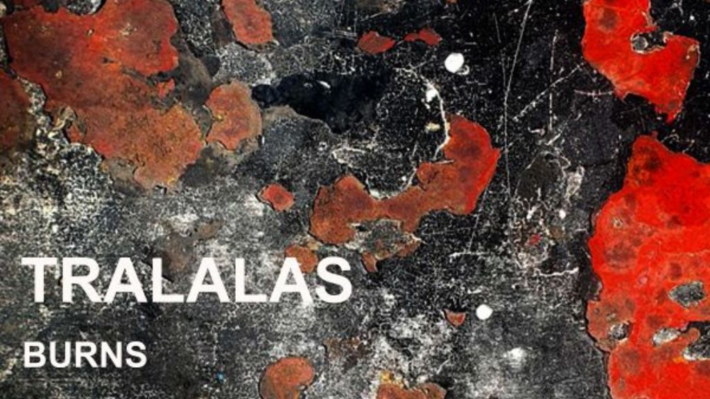

TRALALAS Find Fire in the Fragile With “Burns”

The following feature is now included in our online magazine which is also available in print.
Online Magazine | Print MagazineFor more details contact us at: volechomag@gmail.com
In the hauntingly silent darkness of their July drop Winter on the Vine, Danish dark-pop group TRALALAS come back with Burns, a song that is its own subdued inflammatory. While the initial single mapped the cycles of transformation and clenched quiet of complicity, Burns turns in. At three and thirty seconds, it's close but sweeping, an exploration of the capriciousness of human relationship and the manner in which feelings ricochet back and forth between gain and loss, proximity and distance.
Follow Our Playlist For More Music!
With songwriting and frontman Morten Alsinger as its core, TRALALAS construct their sound more as a group constructing atmosphere. You can feel it in the textures—warm analog production, Heidi Lindahl's ghostly harmonies twisting around Alsinger's voice, Christina Schmidt Damm's calm keys, Thomas Golzen's bass and guitar lines twining around the beat, and Francis Nørgaard Jensen's restrained percussion. Featuring Thomas Li on co-production, the track inhales with accuracy, every moment suspended between light and shadow.
Alsinger describes his writing as essayistic, and so it is. These are not free-floating lyrics. They are statements of mind abbreviated in action, inner voice expelled. His invocation of Montaigne—"I write from the dark against the light"—does as much to record not just the ethos of Burns but the larger enterprise being constructed on in TRALALAS' self-titled debut album out in October. The group don't require simplistic answers or moralities. They require perspective, the place where you end up when you stay with brokenness long enough for its rough edges to get in your face.
In that way, Burns is a companion piece to Winter on the Vine. Together, the two singles map out the territory for an album that will be an inner examination of vulnerability and intensity, composed not in slogans but in slow-burning patience. If Winter on the Vine was a lesson in circles, then Burns is about embers left over, the way love, friendship, and loss slice us open and leave us walking around the ashes searching for shape.
The music is in the dark-pop style of someone like Zola Jesus, Agnes Obel, or the more subdued edges of Depeche Mode, but TRALALAS form their own sound. The music is electric and muted, cinematic but not overwrought. It's the kind of song that doesn't sweep you in with bombast but sweeps you in with sound, until you find yourself leaning forward just to hear the next turn.
And at the end of Burns, there is left not just the lyric or the hook but the space between them. It is a record that requires repeat listens not because it is catchy in the traditional way, but because it leaves an emotional residue. And in that which remains, half shadow, half flame, you begin to see what TRALALAS are constructing towards: an album which harnesses the vulnerability as fuel rather than extinguishes it.
This dispatch was last updated on September 16, 2025